V
Memory
He has no tomb. His memory has been kept by a few documents, a few witnesses and his home town.
No known grave
He was buried in September 1936 in the Fuencarral cemetery as an unknown man. Later he was exhumed, with no record kept of the date or of where his remains were taken, and they most probably ended up in the common ossuary. There is no record of their being moved anywhere else. There is no tomb to pray at: there is a death record, a photograph and a note in the margin.
Certificate from the Almudena Cemetery (2006). Profile in Testigos de la Redención.
Alaejos
Alaejos is a small town in the Tierra de Medina, between Medina del Campo and Nava del Rey, in the province of Valladolid, known for the towers of its two great churches, Santa María and San Pedro, which can be seen from far away. Here are the places of his childhood and his vocation. The house where he was born, in Calle Casasnuevas. The church of San Pedro, where he was baptised and confirmed. The church of Santa María, at whose door Fr Negro said of him: “This one wants to come with us”. And the hermitage of Our Lady of the Casita, where he went to give thanks on the day of his first communion and to whose Virgin he made the novena of May 1887.
Birth record. Curriculum vitae (1893), pp. 5, 7 and 9–10.
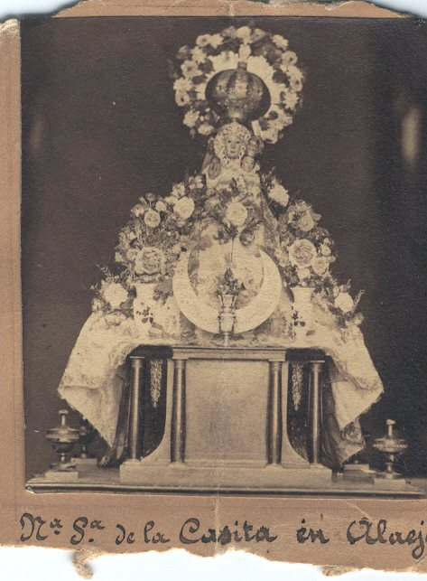
At the beginning of book 15 of baptisms of San Pedro, someone wrote a note so that the link between that entry and what happened later would not be lost: “On folio 165 of this book is the entry of Father Donato Giménez Viviano, a Redemptorist who was imprisoned […] in the Fomento Checa in Madrid, from which prison he was taken on 17 September 1936”.
Certified copy of the baptismal record, 29 July 2004 (APRM, Mártires, 1209000).
Three other boys left Alaejos with him in September 1887, on their way to the juniorate. One of them, Saturnino Martín Lucas, baptised in Santa María, made his profession on the same day as Donato and was ordained with him in Astorga. He spent his last years in Portugal, where he died in 1955. His letter of 1944 is the best source we have on the childhood and character of the Blessed.
Introduction to Fr Saturnino’s letter (APRM, Mártires, 1209103).
Those who kept his memory
Lola Moreno Tobarra, the young woman who took him in on Calle Mayor, was arrested with him. When she left the checa she told what had happened, and through other Redemptorists her account reached the notes of Fr Lucas Pérez.
Notes of Fr Lucas Pérez (APRM, Mártires, 1209102).
Jenaro Xavier Vallejos, the priest from Navarre in cell number 5, and Antonio Gómez Fernández, the young man whose confession he heard, left testimony of his last days.
Statement of Vallejos. Testimony of Antonio Gómez in the notes of Fr Lucas Pérez.
Fr Lucas Pérez, a Redemptorist, gathered the facts of his martyrdom and his life in the 1940s. In August 1944 he wrote from Nava del Rey to Fr Saturnino: “I have already studied the part about the martyrdom; what I still need is the part about his life”.
Letter of Fr Lucas Pérez to Fr Saturnino, 12 August 1944.
Fr Antonio Manuel Quesada, a Redemptorist and vice-postulator of the cause, requested in 2006 the details of the “unidentified man” buried in Fuencarral. That same year the Civil Registry corrected the 1936 record and gave him back his name.
Death record and certificate from the Almudena Cemetery (2006).
His feast
The Church celebrates his memorial on 6 November, together with the other Redemptorist martyrs of Madrid and of Cuenca. The anniversary of his death is 18 September.
cssr.news, 22 October 2022.
Gallery
Photographs from the Redemptorist Missionaries, reproduced with their permission. The dates are those recorded in the archive for each image. Some are details or restored versions of the same photograph; they are shown at their own size, without enlarging them more than they will bear. Tap an image to see it in full.

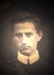

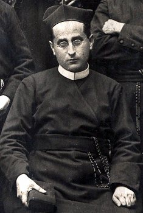

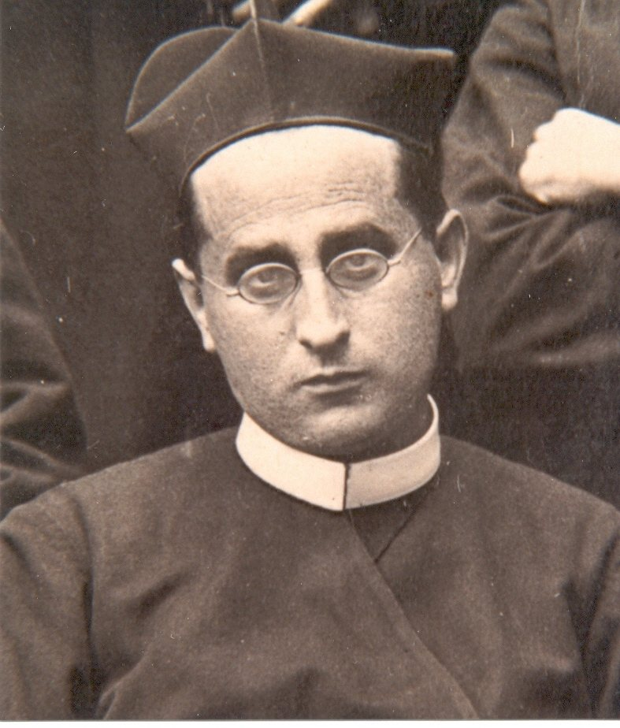


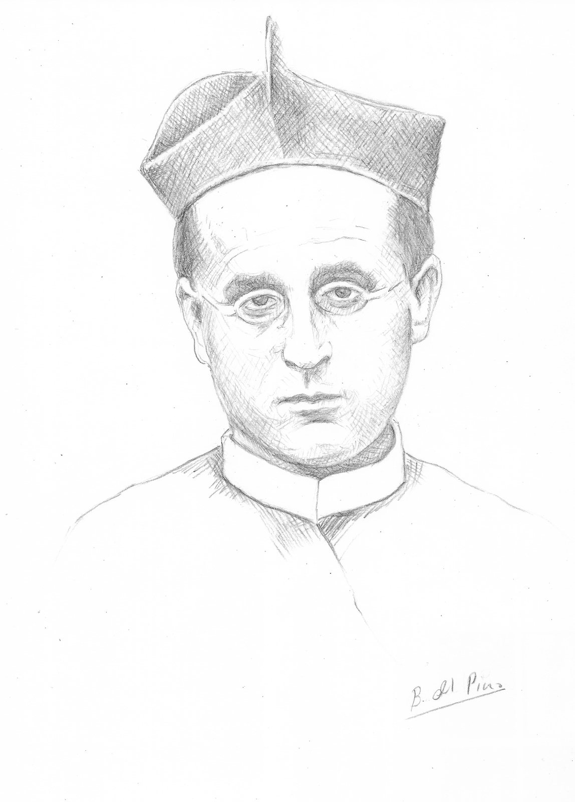

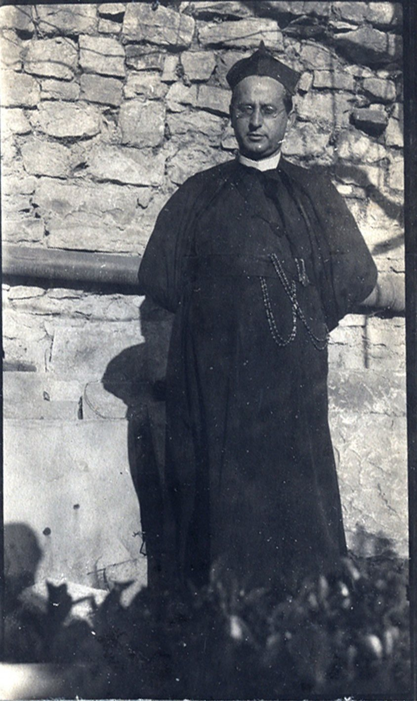

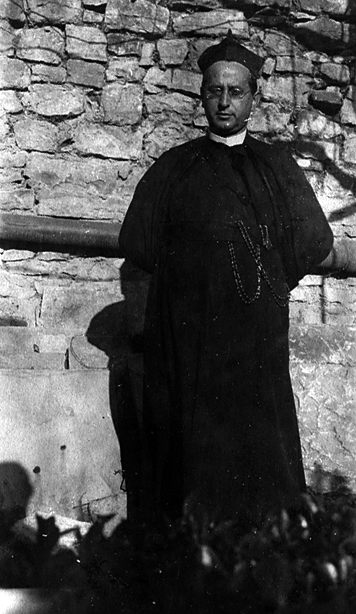

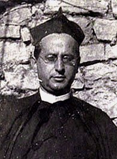

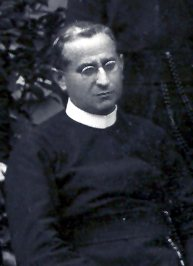

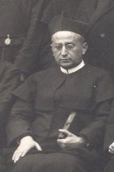

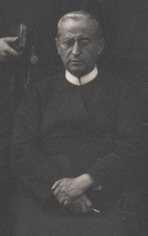

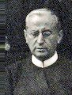

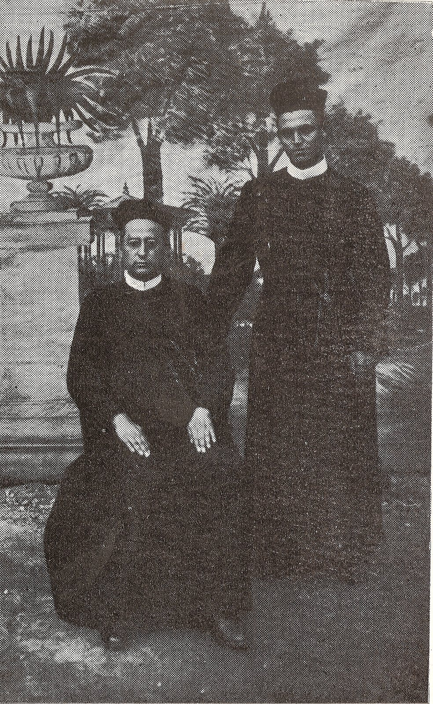